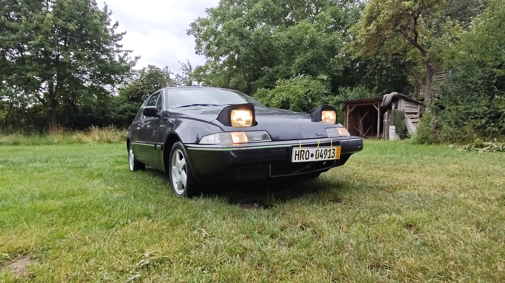

Welcome! Here, I will talk about my project cars.
Car No2: 1994 Volvo 480S (2.0L)
God, I love this car.
This is my current Daily! Beautiful little car that popped up in my life (get it??). Engine by Renault, Suspension touched up by Lotus, funny stuff like that. It drives like a charm except funny idle issues and erratical Herbie-like behavior. Nice sound, good around corners, all those goodies. You will probably see this car in the same channel that I linked on my Fiat site. Lots to talk about, too much for here. Drop by!! :3